Every figure a run produces, shown as unmodified output, with what each measures and what this particular run shows. The two further figures the package can write, and why this cohort cannot produce them, are at the end.
0. The data, and how to reproduce every figure below
0.1 What the data is
The graft-versus-host disease dataset distributed with flowCore (Brinkman et al., 2007, Biol Blood Marrow Transplant 13:691; Artistic-2.0): peripheral blood from five allogeneic transplant recipients, drawn at up to seven successive visits and stained with a four-colour myeloid panel.
| Samples | 35 |
| Patients | 5 |
| Acquisition batches | 7 successive visits |
| Groups | GvHD grade 1 (7 samples) against grade 3 (28) |
| Panel | CD15, CD45, CD14, CD33, with forward and side scatter and a Time channel |
| Events per file | 2,205 to 66,105, median 12,666 |
Nothing is downloaded. The data ship inside a package cyRAVEN already
depends on, so this example is reproducible offline and cannot break
when a repository moves or a certificate expires.
inst/scripts/demo_data.R writes them out as FCS together
with the two input files, making two preparation changes and no others:
$PnS is reduced from CD15 FITC to
CD15, because cyRAVEN matches marker symbols exactly; and
the single area channel FL2-A is dropped, leaving a
consistently height-only file. Event values are written as flowCore
ships them.
0.2 The exact sequence
Five commands, one block each. Copy and run them one at a time; together they reproduce every figure on this page.
1. Get the image. This is the image these figures were produced with, so pulling is the shorter path to the same numbers.
To build it from source instead, see Commands and every option; the build context is the repository root.
2. Make the folders.
3. Write the cohort, its sample sheet and its config.
docker run --rm -v "$PWD/demo:/demo" \
--entrypoint Rscript cyraven:1.0.0 \
/opt/cyraven/src/inst/scripts/demo_data.R /demo4. Validate the inputs, in seconds, analysing nothing.
docker run --rm -v "$PWD/demo:/data:ro" -v "$PWD/results:/results" \
cyraven:1.0.0 --dir /data/fcs \
--samples /data/samples.csv --config /data/panel.yaml \
--group-column cohort --reference-group "GvHD grade 1" \
--batch-column visit --outdir /results --check5. Run it.
docker run --rm -v "$PWD/demo:/data:ro" -v "$PWD/results:/results" \
cyraven:1.0.0 --dir /data/fcs \
--samples /data/samples.csv --config /data/panel.yaml \
--group-column cohort --reference-group "GvHD grade 1" \
--batch-column visit --cluster --outdir /resultsOn Windows PowerShell substitute ${PWD} for
$PWD; on Git Bash prefix the docker run lines
with MSYS_NO_PATHCONV=1, or the shell rewrites
/data into a Windows path.
Step 4 should report 35 files, four resolved markers, that every
marker the specification names is present, that the sheet covers every
file, and the group sizes. Step 5 writes 24 figures and 35 tables into
results/, plus report.html, which carries all
of them embedded in one file.
0.3 What each flag is doing
| Flag | Effect on this page |
|---|---|
--group-column cohort |
Enables section 6. Without it there is no between-group comparison
and group_comparison.png is not written |
--reference-group "GvHD grade 1" |
The group the other is tested against, drawn unfilled and leftmost |
--batch-column visit |
Enables section 7. Without it batch_diagnostic.png and
the drift table are absent |
--cluster |
Enables unsupervised_clusters.png and the gate-cluster
concordance tables in section 4 |
The defaults supply everything else: gate uncertainty, detection limits, acquisition QC and the spreading report are all on unless switched off, because an analysis that has to be requested is one that does not get run.
What the colours mean, and why they are those colours
Study, cohort and timepoint groups take green, red, purple, amber, blue, pink in that order, with green always the reference group. The assignment is fixed, so a colour means the same group in every panel of every figure in a run.
The order is chosen for separation rather than aesthetics. Groups are usually few, and with few categories the eye needs hues that are far apart: red, orange and yellow are neighbours on the colour wheel, are the hardest triple to tell apart at bar-chart size, and collapse almost completely under red-green colour vision deficiency. Each colour here sits roughly a sixth of the wheel from the last.
Two groups are never given the same colour. Past six the run generates further hues rather than starting the list again, because a repeated colour reads as one group split across two bars.
The same reasoning applies to small non-study category sets, where the picks are spread across the population palette instead of taken in order.
Two more things about how the figures are drawn
Backgrounds are opaque white. Figures used to be
written with a transparent ground, 11 of 20 in one run. That is
invisible inside report.html, which is white, and breaks
everywhere else: expand a figure in a dark viewer, or drop it on a dark
slide, and the black axis text sits on whatever is behind it.
Legends sit at the top left on the large multi-panel
figures - functional_markers.png,
population_frequencies.png,
population_ratios.png, group_comparison.png,
marker_state.png and
umap_multigraph_overlay.png. A collected guide is otherwise
centred vertically on the right, which on a figure several thousand
pixels tall is a long way from the panels it explains. The single-panel
UMAP figures keep theirs on the right, where it already sits beside what
it describes.
0.4 Why your figures should match
The container pins R 4.4.3, a dated CRAN snapshot and Bioconductor
3.20, and the run is seeded once at 42 with every stage restoring the
RNG stream. Those two things together are what make the figures on this
page reproducible rather than merely similar. Run outside the container
and the embedding will differ, because uwot is stochastic
across its own versions and across the BLAS beneath it.
Every option, and the situation each is for, is in Running cyRAVEN. The two input files are described in Inputs.
0.5 Four properties of this cohort that govern how the figures read
The contrast is disease severity, not disease against health. Both groups are transplant recipients; the comparison is GvHD grade 1 against grade 3. There is no healthy arm.
The groups are unbalanced and confounded with donor. Seven samples are grade 1 and 28 are grade 3, and grade is a property of the patient rather than of the visit, so between-group differences are partly between-donor differences. Section 7 is where that shows.
The acquisition recorded pulse height and no area. cyRAVEN falls back to height and says so. Height understates a bright wide event, so thresholds here are not interchangeable with those from an area acquisition of the same panel. The singlet gate is skipped, since it needs FSC-H and FSC-A to be distinct.
Eight of 35 samples fail staining QC and are excluded from every test. Twenty- seven remain.
Which file each figure comes from, and which flag produces it, is in
the Output article. The order to read them in
is in the Diagnostics article and is
reproduced by report.html.
1. Before any number
recon_diagnostics.png
The scatter gate per sample, drawn on the distribution it was derived from.
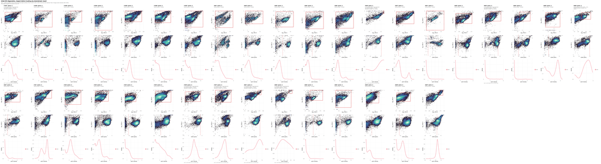
What to look for. The scatter boundary should sit in the trough between the debris mode and the intact-cell mode.
This run. The log carries
no FSC-A density valley found; using the 60th percentile.
On this instrument the forward-scatter distribution has no clean debris
shoulder, so the boundary is a quantile rather than a minimum. That is a
fallback, and it is the reason the figure has to be read before anything
derived from it: every population below sits inside a parent gate whose
lower edge was placed by convention rather than by the data.
gating_qc.png
Every marker threshold superimposed on the density it was derived from.
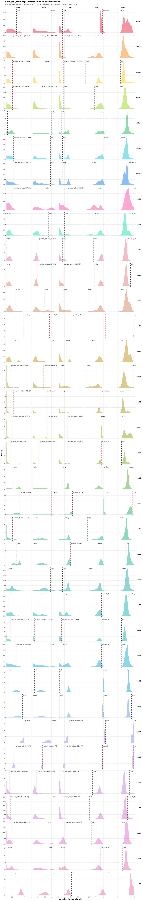
What to look for. A cut in the trough between two modes is well placed. A cut on the flank of a single mode is a quantile fallback and carries no evidence of separation.
This run. Of 175 sample-and-marker thresholds,
103 resolved a density minimum and 72 fell back to a
quantile. The fallbacks are not spread evenly:
spreading_receivers.csv in section 5 shows which markers
they concentrate in and why.
2. Placement precision and counting sufficiency
frequency_uncertainty.png
Each population’s per-sample frequency with the standard uncertainty propagated from the thresholds behind it.
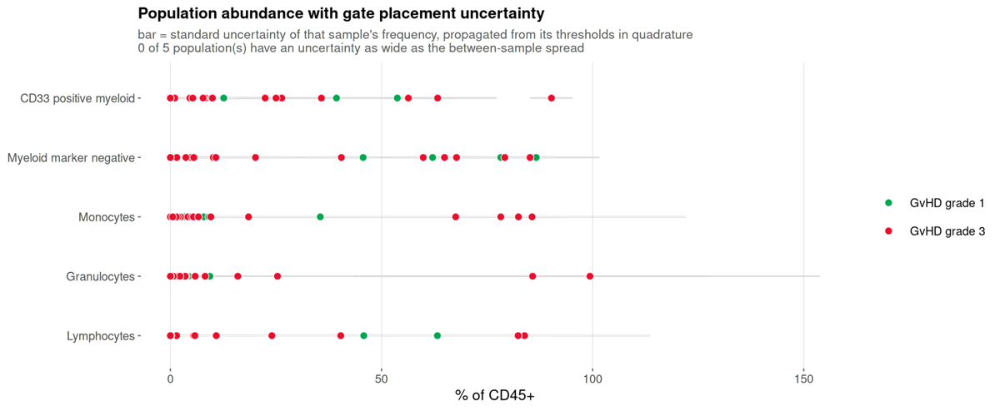
What to look for. Whether the bar within a sample is narrower than the scatter between samples. Where it is not, the variation on display is the cut moving.
This run. None of the five populations has a gate uncertainty as wide as its between-sample spread. The donors genuinely differ from each other by more than the cuts move, which is the configuration in which a between-group comparison is worth attempting at all.
uncertainty_budget.png
Which threshold each population’s uncertainty comes from.
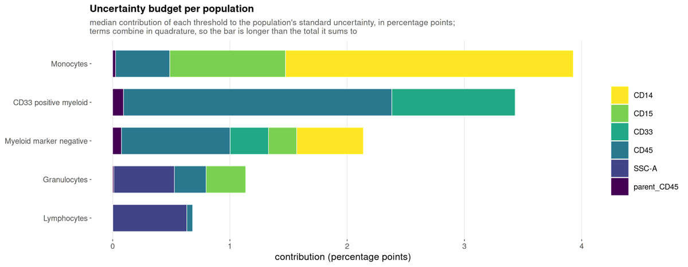
What to look for. Which gate to fix. A population dominated by one marker has one threshold worth inspecting.
detection_limits.png
How many samples each population clears the limits of detection and quantification in.
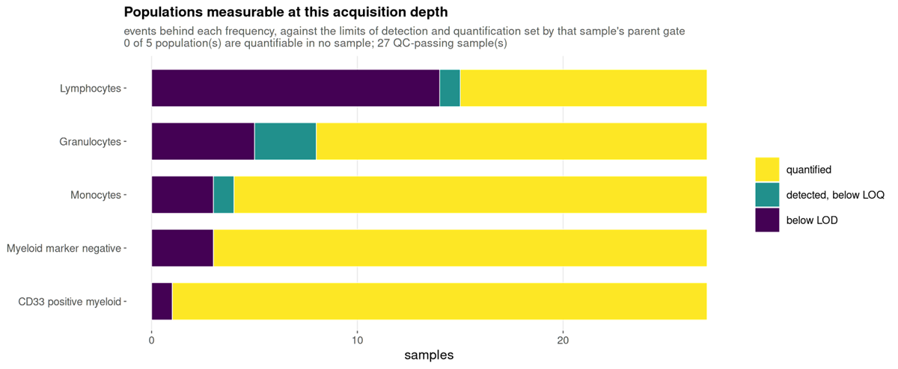
What to look for. A population mostly below the limit of quantification cannot be recovered by re-gating: the numerator is small for want of acquired cells.
This run. Of 135 population-and-sample values, 104 are quantified, 5 are detected but below the limit of quantification, and 26 are below the limit of detection. The below-limit values are concentrated in the smaller populations and in the samples with the fewest events, which range from 2,205 upward. Those 26 values should not carry a group comparison on their own.
3. Are the populations what they were declared to be
population_marker_heatmap.png
Measured marker intensity against the declared populations, z-scored.
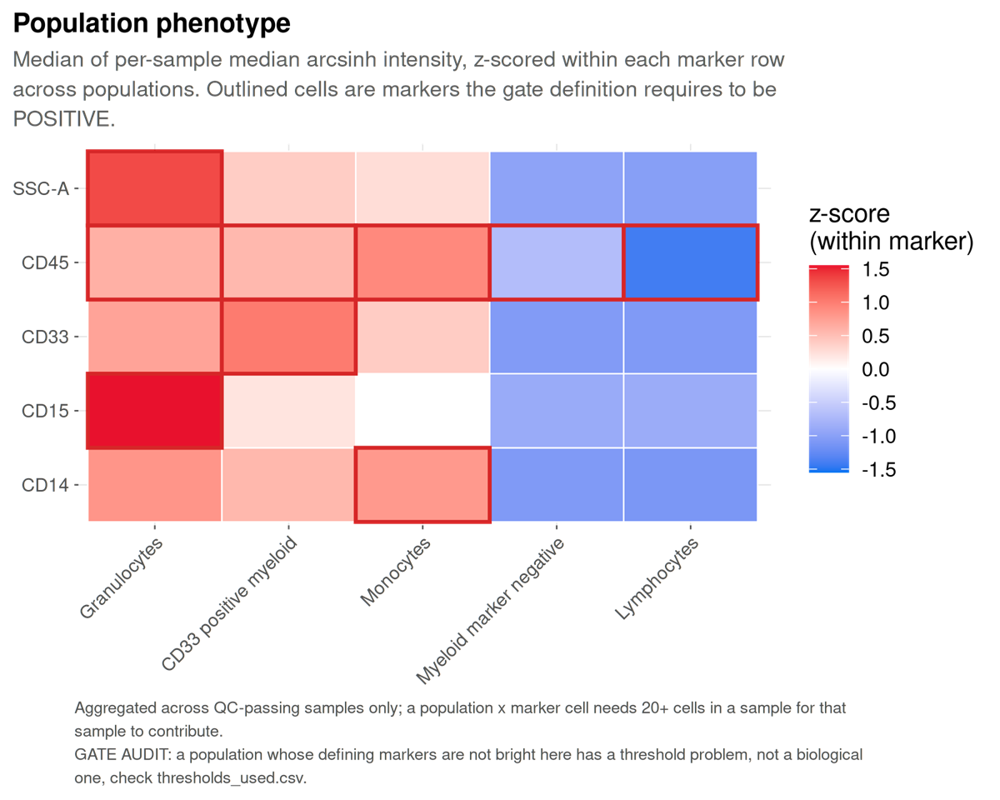
What to look for. Identity is declared here before the data are examined, so this figure serves the inverse function of its equivalent in clustering-first analysis: a population that does not show the markers its definition requires falsifies the gate that produced it.
4. The shared embedding
umap_overview.png
One UMAP per marker panel, computed across all samples.
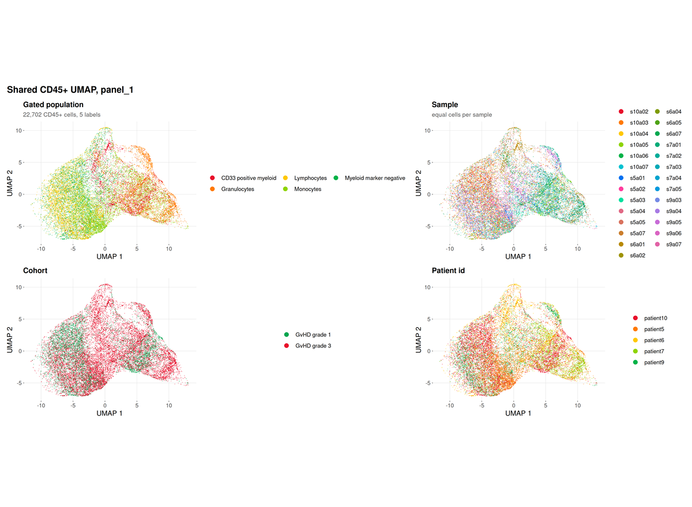
This run. The panel resolves four markers, and the
log records
fewer than 2 preferred lineage markers present; falling back to all 4 eligible markers.
The embedding is therefore driven by CD15, CD45, CD14 and CD33 rather
than by a curated lineage set, which is the correct behaviour for a
four-colour panel and a limitation of the panel rather than of the
run.
marker_umaps_by_group/
A folder rather than a single file, written by every run: the same markers as above, one per file at full size instead of shrunk into a grid cell.
Two kinds of file per marker.
| File | What it shows |
|---|---|
umap_CD3.png |
Every sample pooled |
umap_CD3_by_<category>.png |
The same marker split by a category from the sample sheet |
A split file is written for every category present, not only
the one named by --group-column. That flag decides
what is tested; it says nothing about what is worth looking at, and a
cohort usually carries several categories at once. A run grouped by
timepoint still gets its infection-focus and sex splits.
The pooled file is kept alongside them because it answers a different question. Splitting asks whether a marker sits differently between categories; pooling asks where the marker is at all, and no split figure can show that, because each facet holds only a subset of the cells.
Within one file the colour scale is shared across the facets and clipped to the 1st and 99th percentile of the cells drawn, so a colour difference between two panels is a real intensity difference. It is not shared between files: markers differ by orders of magnitude in brightness, and one scale would flatten every dim one.
Not faceted, deliberately: numeric columns, which would give one
panel per distinct value; identifiers such as sample_id and
patient_id, which are not categories; and single-level
columns, since one facet is not a comparison. Past four categories the
run draws four and names the rest in the log.
--no-marker-group-umaps skips the folder.
Both kinds of file carry the same panel border and grey title bar. The pooled one is a single panel faceted by a constant, “All samples”, so it comes out of the same code path as the split ones: a section where one figure is framed and the next is not reads as two kinds of figure rather than one kind drawn two ways.
umap_density.png and umap_density_by_group.png
Where cells are concentrated, overall and by group.
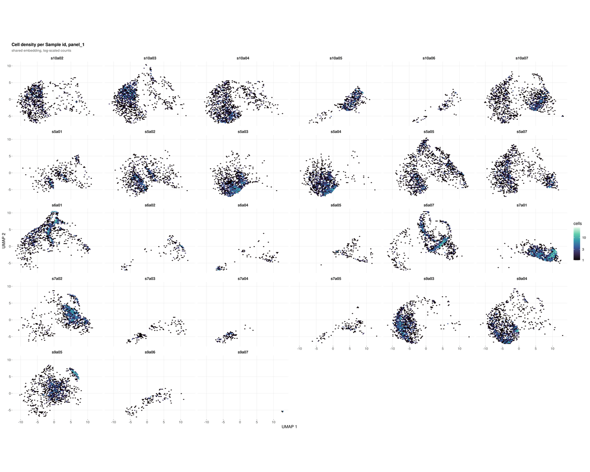
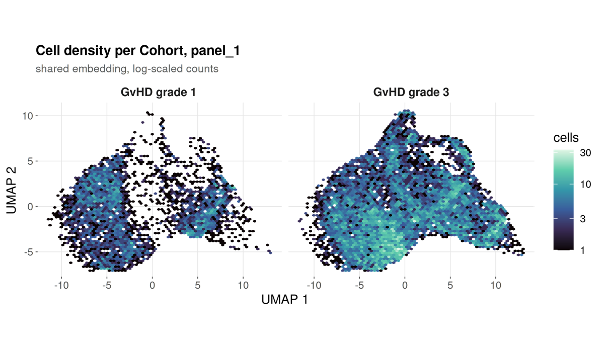
umap_multigraph_overlay.png
Subclusters within each declared population, drawn on the shared embedding.
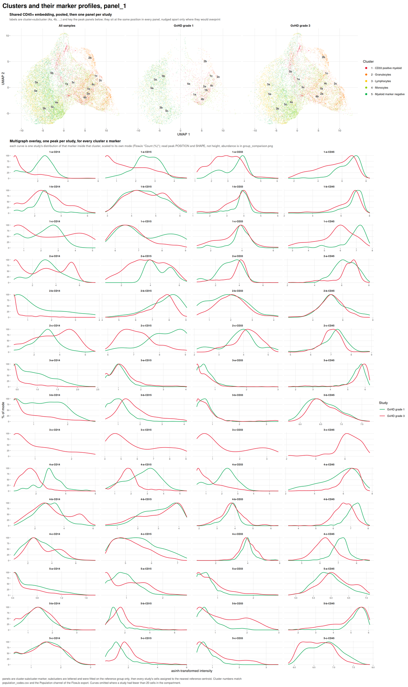
unsupervised_clusters.png
A self-organising map clustering of the same cells, computed without reference to the specification.
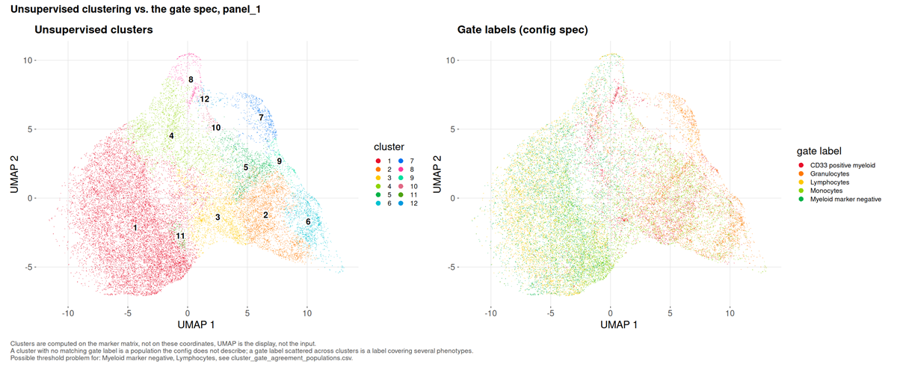
What to look for. A cluster dominated by the unassigned label is a population the specification does not describe. A declared population holding far fewer cells than the cluster it dominates is a misplaced threshold.
This run. Twelve metaclusters over 22,702 cells, and no undescribed cluster: the specification accounts for every phenotype the data contain. Two findings follow that a frequency table cannot deliver.
Two populations are flagged suspect threshold. Lymphocytes and Myeloid marker negative both have their dominant cluster in cluster 1, and both sit at an effective cluster count near one (1.30 and 1.54), meaning each is a single phenotype. But cluster 1 holds 11,724 cells and is 36.9% Lymphocytes against 35.8% Myeloid marker negative. The two definitions, CD45+ SSC-A low CD33- CD14- and CD45+ CD14- CD15- CD33-, select largely the same cells in this panel. They are not independent readouts, and section 6 tests them as though they were.
Three populations are flagged fragmented: Granulocytes spans an effective 6.13 clusters, CD33 positive myeloid 5.91, Monocytes 3.39. Each label covers several distinct phenotypes that a four-colour panel cannot separate.
5. Why a threshold did not resolve
acquisition_qc.png
Events recorded in each equal-width slice of the acquisition, with the flagged slices marked.
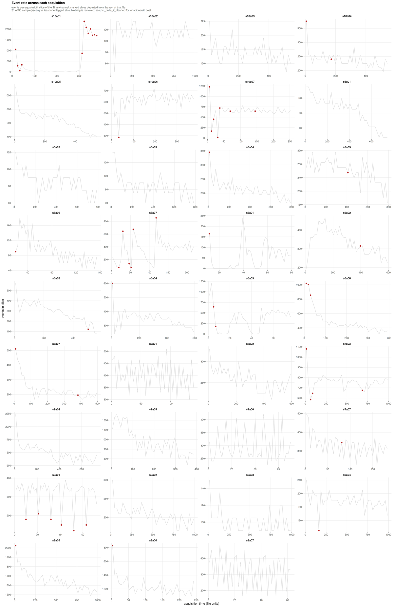
What to look for. A flat line is a steady acquisition. A sustained trough is a partial clog, a spike is usually a bubble, a step is a settings change.
This run, and the most consequential finding in it. Only 14 of 35 samples are stable; 11 are minor and 10 are unstable. Excluding every flagged slice would move the largest population by 5.749 percentage points.
That number is what makes the flag actionable. It is an order of
magnitude larger than the gate uncertainty on the same populations, so
unlike a cosmetic instability this one would materially change the
reported frequencies. On this cohort the honest reading is that
acquisition instability, not gate placement, is the dominant technical
term, and the files carrying it deserve inspection before any frequency
from them is published. Nothing is removed unless
--drop-unstable-events is given.
Spillover spreading
spreading_receivers.csv and
spreading_pairs.csv have no figure; they are ranked tables.
They belong here because they answer the question section 1 left
open.
| Receiver | Worst source | Widening | Fallback rate |
|---|---|---|---|
| CD15 | CD33 | 3.06x | 0.40 |
| CD45 | CD15 | 1.51x | 0.40 |
| SSC-A | CD15 | 1.38x | 0.26 |
| CD14 | CD45 | 1.10x | 0.57 |
| CD33 | CD14 | 0.99x | 0.43 |
CD15’s negative population is three times wider when CD33 is bright, and CD15 falls back to a quantile in 40% of samples. Spreading fills in the valley a threshold would sit in, so those cuts are unresolved for an optical reason that no gating strategy recovers.
CD14 is the instructive counter-case: it has the highest fallback rate at 57% and receives almost no spreading. Its failure to resolve has a different cause, and the table is what separates the two.
6. The results
group_comparison.png
Per-population abundance between groups, as per-sample distributions.
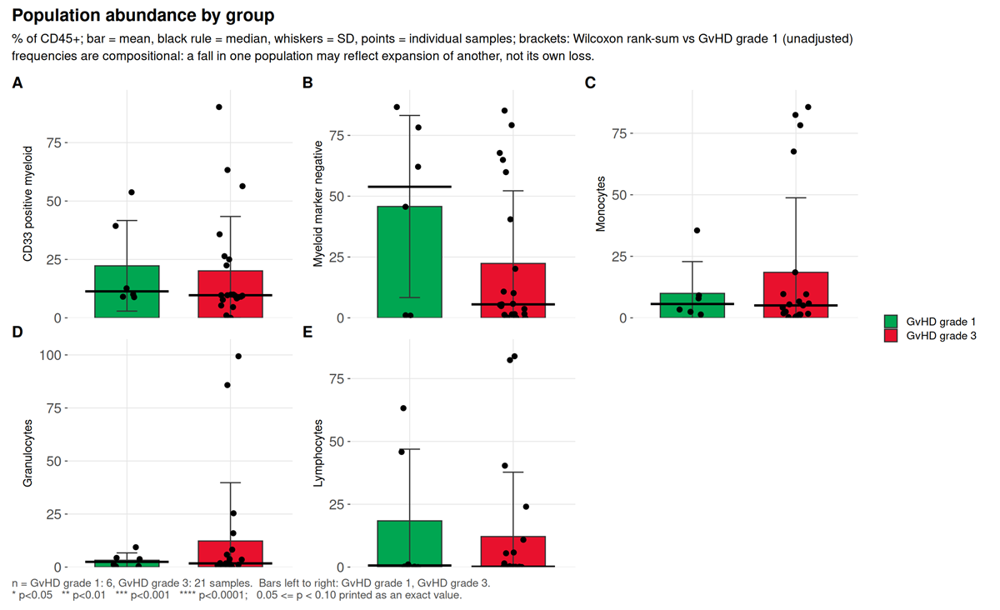
What to look for. Adjusted p, then Cliff’s delta,
then difference_over_gate_u, then
difference_over_total_u.
This run. Of five populations, none reaches raw p < 0.05 and none survives correction. The largest effect, Myeloid marker negative, has a Cliff’s delta of -0.254 and p = 0.37.
That population is worth dwelling on, because it is exactly the case
the four-way reading order exists for. Its
difference_over_gate_u is 11.29: the
difference between group medians is eleven times the distance the gate
itself moves, so it is not an artefact of threshold placement. And it is
still not significant, because with seven samples in one group and 28 in
the other, drawn from five donors, the between-donor variation swamps
it. A run that stopped at “the difference is much larger than the gate
uncertainty” would have called this a finding. The donor-level test is
what prevents that.
marker_state.png
Differential state per population and marker, on per-sample values.
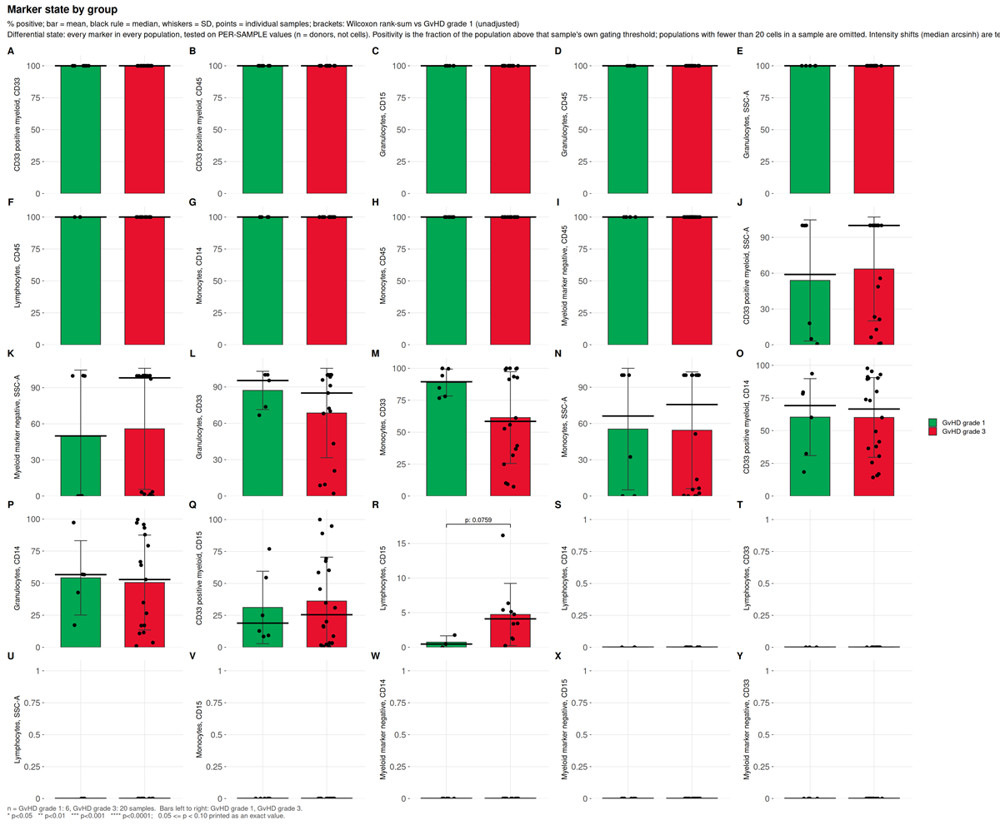
This run. 50 tests, none reaching raw p < 0.05.
functional_markers.png
Marker intensity read within an already-defined population, rather
than used to define one, scoped by the functional_blocks:
section of the configuration.
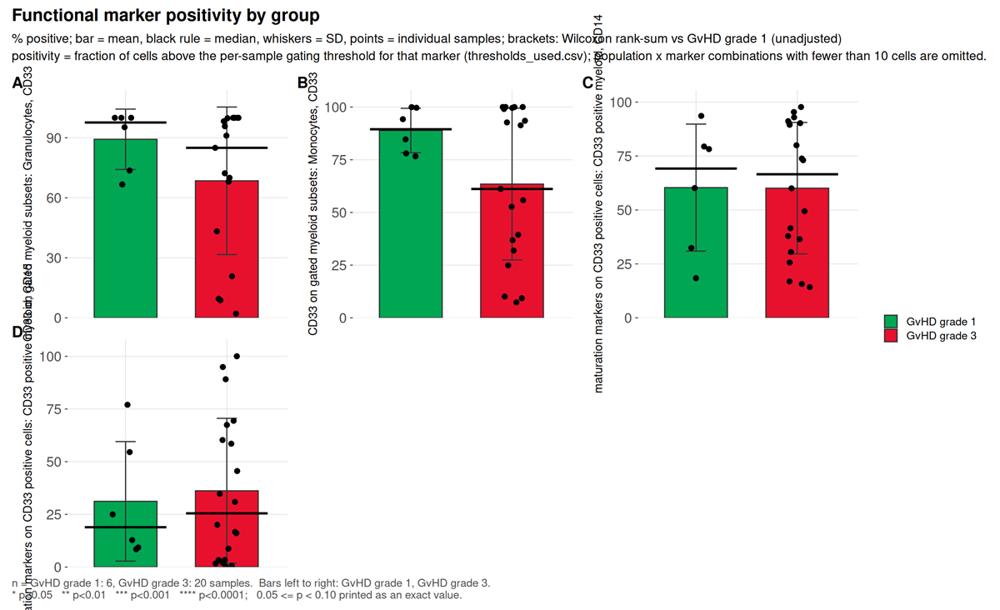
What to look for. Whether the marker is one of the definers of the population it is being read in. Testing CD15 inside a CD15-positive gate returns 100% in every sample: zero variance, an undefined p-value, and a result that measures the definition rather than the biology. Scoping exists to prevent that, and the demo configuration splits its two blocks precisely so no marker is reported inside a gate its own threshold helped draw.
This run. Four tests across two blocks. CD33 on gated granulocytes has the largest effect, Cliff’s delta -0.333 at p = 0.24. CD14 and CD15 within CD33 positive cells both return a Cliff’s delta of exactly 0.000 at p = 1.0, which is a real null and not a degenerate one: the values span 14.2% to 97.7% and 0.4% to 100% respectively, and the two grade groups interleave exactly.
population_ratios.png
Ratios of declared populations, from the ratios:
section, tested with the same statistics as any abundance.
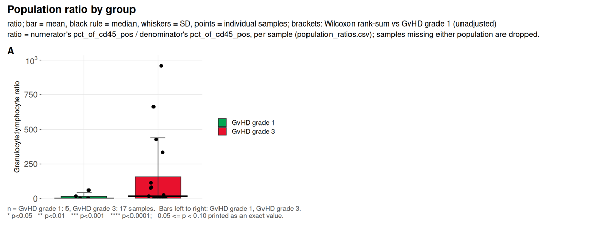
What to look for. A ratio is not recoverable from either frequency alone when both are percentages of the same parent, which is why it is declared rather than derived after the fact.
This run. One ratio, granulocyte to lymphocyte, a conventional inflammatory index. Cliff’s delta 0.271 at p = 0.39.
7. Is the contrast confounded
threshold_drift.png
Whether each marker’s per-sample thresholds separate by study group.
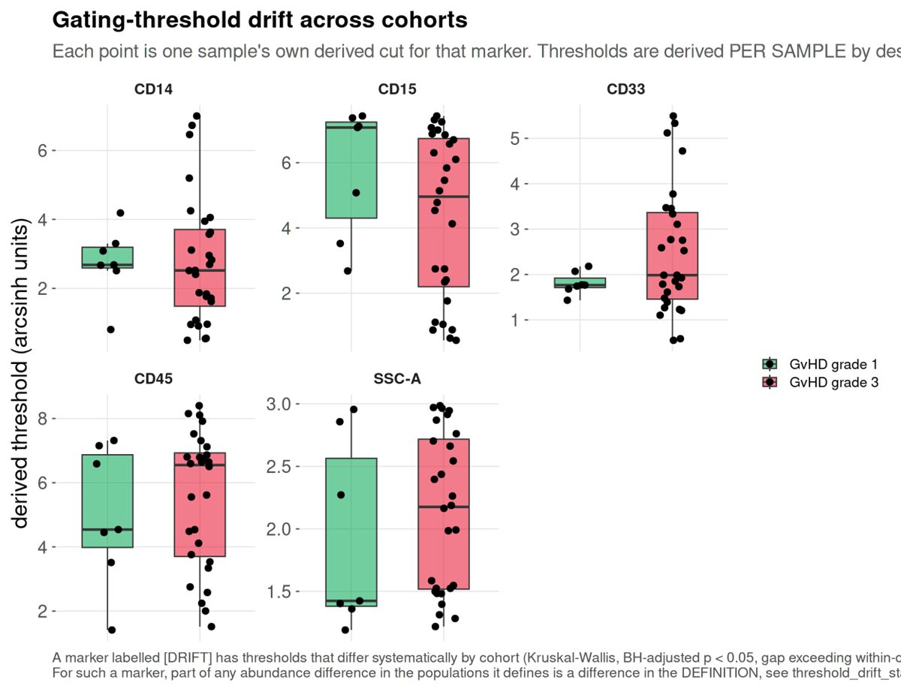
This run. Five markers tested, none flagged. The thresholds do not track GvHD grade, so no part of a between-group difference here is definitional.
batch_diagnostic.png
Batch structure in the shared embedding, against a permutation null.
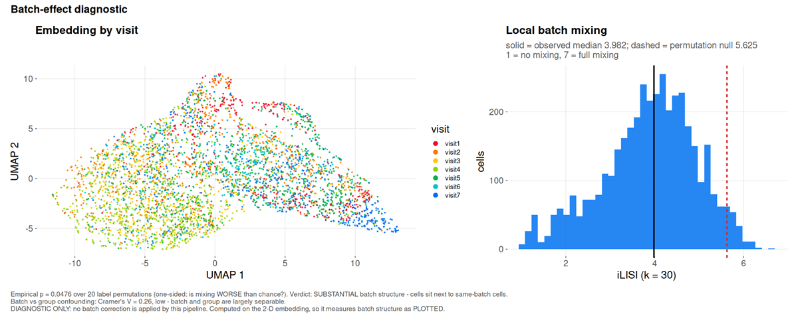
This run. iLISI 3.982 against a null of 5.625, p = 0.048: substantial batch structure, meaning cells sit next to cells from the same visit more often than chance allows.
marker_batch_drift.csv names the channels responsible.
All four markers differ between visits by at least 1.1 times
their own spread, the worst being CD14 at 1.24 MAD between
visit 4 and visit 7.
The question that decides what may be done about it is separability,
and batch_group_confounding.csv answers it: Cramér’s
V between visit and grade is 0.26, reported as
low, batch and group are largely separable. Correction is
therefore permitted here. Had the grades been acquired in distinct
periods, V would approach one and --correct-batch
would refuse, because removing the batch and removing the finding would
be the same operation.
The two figures this cohort cannot produce
That is everything the GvHD cohort supports. The package writes two more, and both need an input no public FCS archive carries.
absolute_counts.png and
absolute_counts_qc.png are written by
--absolute-counts, which takes a table of measured cells
per microlitre per sample and population, from bead-based or volumetric
counting on the instrument. A frequency is a proportion of a parent
gate, so it moves when any other population moves; an absolute count
does not. The QC figure compares the supplied counts against the
frequencies cyRAVEN measured, which is how a transcription error or a
sample-name mismatch is caught.
They are absent here because the cohort has no volumetric measurement, and a count invented to fill the gap would be indistinguishable in the rendered figure from a measured one. The input format is documented in the Output article.
Where the clinical figure designs come from
The clinical family, clinical_variables_correlation.png,
clinical_association.png,
clinical_effects_<variable>.png,
clinical_landscape.png and
population_trajectories.png, is not drawn from this cohort,
which carries no severity score. What each one is modelled on:
| Figure | Convention it follows |
|---|---|
group_differences.png |
The volcano plot as used in cytometry: effect on x, -log10 p on y, so the largest shifts and the strongest evidence are read in one glance (Teiko, identifying immune differences with volcano plots). The x-axis is Cliff’s delta rather than a fold change, because a fold change of medians is unbounded and at single-digit group sizes is decided by whichever sample sits at the median |
clinical_effects_<variable>.png |
Effect with its interval rather than a p-value alone, the central recommendation of the prognostic-marker reporting guidelines (REMARK explanation and elaboration), with percentile bootstrap intervals as used for Cliff’s delta (Cliff’s Delta Calculator) |
clinical_variables_correlation.png |
The correlogram convention: circle area for the absolute coefficient, fill for its sign, the number printed only where it reaches significance (Correlation-based network generation, visualization and analysis, BioMed Research International) |
clinical_landscape.png |
The annotated-matrix layout of immunoprofiling papers: a z-scored molecular matrix with clinical annotation bars above it, columns ordered by severity (An immune dysfunction score for stratification of patients with acute infection; Multi-omics resolves a sharp disease-state shift between mild and moderate COVID-19, Cell) |
population_trajectories.png |
Per-patient trajectories split by outcome, the figure that separates survivors from non-survivors in longitudinal sepsis cohorts, where the two differ in direction of travel rather than at any single timepoint (Longitudinal immune profiling in sepsis, medRxiv) |
Two departures from those conventions, both deliberate. The volcano draws the smallest p-value the design can reach, which no published volcano does and which at these group sizes is often above 0.05. And a Kruskal-Wallis tile stays grey with an unsigned epsilon-squared rather than being coloured on the signed scale, because a three-level variable has a magnitude and no direction.
What this example does and does not show
It shows a pipeline behaving correctly on real, imperfect clinical data: a scatter gate that had to fall back, 72 thresholds that could not resolve with an optical explanation for most of them, acquisition instability large enough to matter, two declared populations that the unsupervised check shows are largely the same cells, real batch structure that is nonetheless separable from the contrast, and a difference eleven times the gate uncertainty that is still not a finding once donors rather than cells are the replicates.
It does not show sensitivity. The group contrast is unbalanced, confounded with donor, and null at this sample size. Nothing here establishes that cyRAVEN detects a real biological effect; it establishes what the diagnostics report when the data are genuinely difficult.